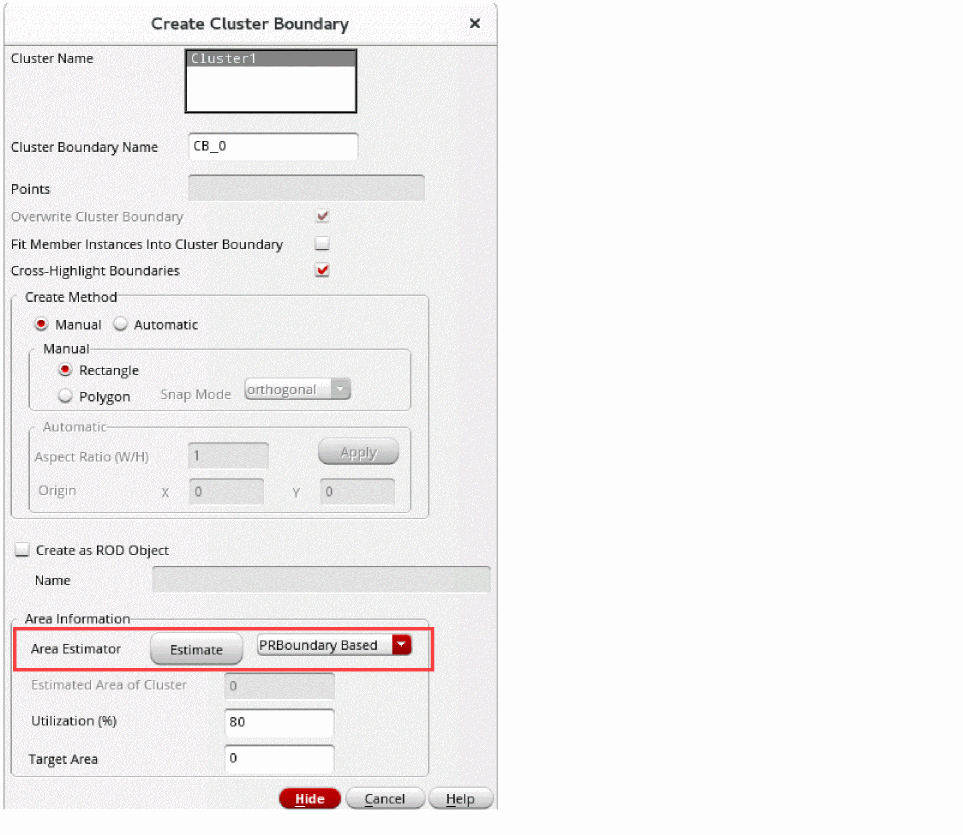
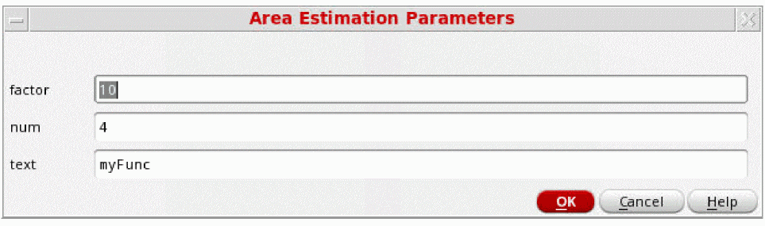

Area Estimation using the Create Cluster Boundary Form
Cluster boundary defines an area in which the contents of a specific cluster are included or excluded, depending upon their definitions. A cluster boundary is attached to a specific cluster object. Each cluster boundary has a unique name with respect to all other cluster boundaries in a given cellview. You can specify the percentage of area within the cluster boundary you want to fill in Layout XL. A registered area estimation function can be called from the Create Cluster Boundary form.
To add an area estimator function to the Create Cluster Boundary form:
-
Choose Create – P&R Objects – Cluster Boundary.
The Create Cluster Boundary form opens.
Area estimator functions that are registered with the cluster object type are displayed in the Area Estimator list. - Select an estimator from the Area Estimator list.
-
Click Estimate in the Create Cluster Boundary form after registering the function.
The Area Estimation Parameters form is displayed, where the parameters can be entered dynamically.
 - Enter the required values in the above form and click OK.
The registered area estimation function is called from the Create Cluster Boundary form.
Related Topics
Area Estimation Function Definition
Area Estimation Function Registration
Registering an Area Estimation Function to Adjust a Virtual Hierarchy Area Boundary
Registering an Area Estimation Function to Adjust a Soft Block PR Boundary
Return to top